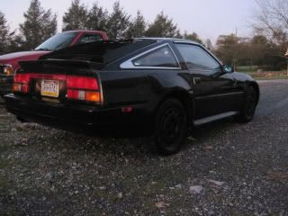

-
Try running them at a high duty cycle--increase the hold amperage of the injectors.BLOZ UP.com
It is not recommended to confirm proper installation by driving into walls or other barriers as this could cause personal injury or damage to the vehicle. -
what all needs done to go distributorless?Do you need a cam postion sensor?"If your car cant do a burnout from a 60mph rolling start, then your engine needs more work."
"Nitrous doesn't blow up motors; Idiots with nitrous blow up motors."
Shooting for 500whp
 -
You can get the DIY wheel, but you need to keep the CAS. You use both signals from the CAS, one functions as a Crank Angle Signal, the other a cam signal. You can remove the cap and rotor and move to coil packs then, if you have a MS3 with the 3X expansion board.85NA2T wrote: what all needs done to go distributorless?Do you need a cam postion sensor?BLOZ UP.com
It is not recommended to confirm proper installation by driving into walls or other barriers as this could cause personal injury or damage to the vehicle. -
tryed to post video bbut theres no sound. i will make a new video.89' Turbo-R.I.P. (scrapped)
87' NA all parts swapped from 89', Stance, 3.3 long block, hx35w, Injector Dynamics 1000cc, isky cams, pathfinder intake, front mount, megasquirt v3.57 w/MS3X
07 Frontier XE <----(turd) daily -
[quote]BLOZ UP wrote:Well I will hopefully be getting that Megasquirt 2 v3.57 from BnB.are you saying this won't support like a cop or wastespark system?Originally posted by 85NA2T"If your car cant do a burnout from a 60mph rolling start, then your engine needs more work."
"Nitrous doesn't blow up motors; Idiots with nitrous blow up motors."
Shooting for 500whp
-
[quote]85NA2T wrote: [quote=BLOZ UP]You can do COP with MS2, no sequential fuel though. It requires a few mods to work as you have to bring out some processor ports.Originally posted by 85NA2TBLOZ UP.com
It is not recommended to confirm proper installation by driving into walls or other barriers as this could cause personal injury or damage to the vehicle. -
I would hold off on buyying that MS2 and just get ms3. become friends with diyautotune on facebook and wait till they have a sale. or call and haggle price in a whole ms3 setup.89' Turbo-R.I.P. (scrapped)
87' NA all parts swapped from 89', Stance, 3.3 long block, hx35w, Injector Dynamics 1000cc, isky cams, pathfinder intake, front mount, megasquirt v3.57 w/MS3X
07 Frontier XE <----(turd) daily -
Too late Haha.I couldn't pass up that smokin deal"If your car cant do a burnout from a 60mph rolling start, then your engine needs more work."
"Nitrous doesn't blow up motors; Idiots with nitrous blow up motors."
Shooting for 500whp
-
Blo Z Up:
For a stock ignition system setup, would you recommend the DIYAutotune trigger wheel or is the factory CAS wheel sufficient? I know the DIY unit is preferred(required?) for coil near plug or coil on plug because of the need to emulate a tooth wheel.
I would just go ahead and go with the DIY wheel, but until I'm 100% with the megasquirt setup, I'd like to retain the ability to go back to factory with a harness change.
This maybe posted elsewhere and I'm just missing it, but could someone post a screenshot of the basic ignition setup window where settings like trigger angle, wheel type, etc are set for the factory wheel? aladin aladin
aladin aladin
I would greatly appreciate it. (if its already in this thread somewhere, and I missed it, I appologize :x) -
It should be in the thread already, but basically, with the dizzy set near the middle of it's range:
Basic Trigger
Inverted output
60 degree offset
That should be more or less all you need.
I would recommend getting the DIY trigger wheel. You can get it started and running with the trigger and then it takes at most 10 minutes to swap wheels. Getting the first tooth offset of the DIY wheel is a little harder.
I would like to mention that I'm having all sorts of signal noise issues though after having switched to the new wheel. I never had these problems before with the basic trigger. While I'm swapping to this maxima motor I might give the old wheel another shot. But basically, I have to enable all the noise filtering and I still get random sync losses, albeit pretty infrequent now. Cranking is also harder, as it seems to lose sync 70% of the time while cranking--but only on some days. Very odd problem that might not be related to the wheel at all.BLOZ UP.com
It is not recommended to confirm proper installation by driving into walls or other barriers as this could cause personal injury or damage to the vehicle. -
Thanks a ton man. Greatly appreciated. I will probably pm you if that's OK once its in if I have any issues. -
Worked on the Z today for the first time in months. got it running a little better. Had to take the distributor and turn it a few teeth to get it in timing. Next is to figure out why i cannot get the TPS to "zero" out and full throttle to "100". the lowest it starts is 69%. Then after that figure out why it will not run at all with the maps sensor plugged in. Any ideas on that?89' Turbo-R.I.P. (scrapped)
87' NA all parts swapped from 89', Stance, 3.3 long block, hx35w, Injector Dynamics 1000cc, isky cams, pathfinder intake, front mount, megasquirt v3.57 w/MS3X
07 Frontier XE <----(turd) daily -
Calibrate the TPS in tunerstudio, no idea why it wont run with the map sensor plugged in unless your VE/timing map is so far off that it isn't getting enough fuel or proper timing at idle. -
The VE under the proper vacuum is wrong and the VE at atmosphere is right for idling.BLOZ UP.com
It is not recommended to confirm proper installation by driving into walls or other barriers as this could cause personal injury or damage to the vehicle. -
Lol, thats what i been doing and typed that out. When you hit "get current" and the throttle is all the way closed, and the tps is turned all the way to one side and it still reads 64. I will hopfully get that figured out by going threw TPS's and calibrating till one works. I havnt messed witht he VE tables yet. Might be able to get something going tomo. I Have the extended version of megalog viewer and tuner studio. I might run it threw that tomo and see what it tells me.slingo wrote: Calibrate the TPS in tunerstudio, no idea why it wont run with the map sensor plugged in unless your VE/timing map is so far off that it isn't getting enough fuel or proper timing at idle.89' Turbo-R.I.P. (scrapped)
87' NA all parts swapped from 89', Stance, 3.3 long block, hx35w, Injector Dynamics 1000cc, isky cams, pathfinder intake, front mount, megasquirt v3.57 w/MS3X
07 Frontier XE <----(turd) daily

Copyright © 2006–. All rights reserved. Privacy Policy